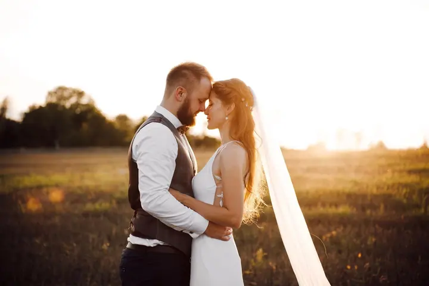
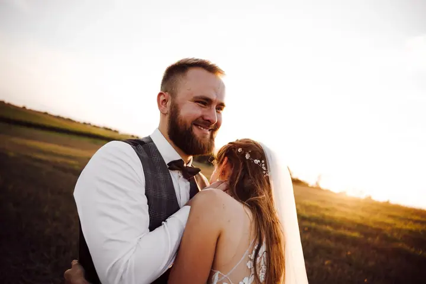
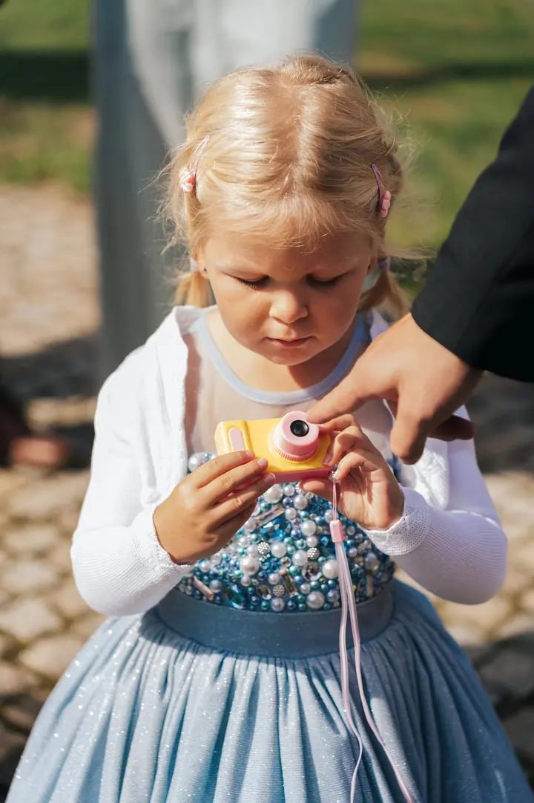
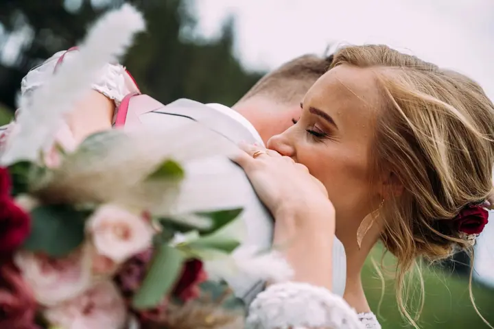

jedna
Svatby
Na svatbě se snažím zachytit všechno bez jakéhokoliv filtru. Přirozeně, tak jak to je, od obřadu až po večerní zábavu.


Jmenuji se Pavel Pešek a rád už pár let fotím. Jsem moc vděčný, že můj koníček může být i moje práce. Fotím svatby, eventy, komerci a reklamu a vždycky se snažím zachytit všechno přirozeně, tak jak to je.
Více o mně
Co dělám
jedna
Na svatbě se snažím zachytit všechno bez jakéhokoliv filtru. Přirozeně, tak jak to je, od obřadu až po večerní zábavu.
Fotím komerci a reklamu. Produkt umím vyretušovat tak, že je téměř dokonalý.
Fotím firemní i společenské akce jako reportáž. Atmosféru, lidi a momenty zachytím tak, jak se opravdu staly.
Kromě fotek dělám i videa. Napište mi, co potřebujete, a domluvíme se, jak to pojmout.
Zachytit všechno přirozeně, tak jak to je.

Za objektivem
Ahoj, jsem Pavel. Fotím už pár let a pořád mě to baví stejně jako na začátku. Z koníčku se mi stala práce a jsem za to moc vděčný.
Rád se věnuji víc disciplínám najednou. V komerci si vyhraju s retuší, dokud produkt nevypadá téměř dokonale. Na svatbách a eventech je to naopak: nic neupravuji a nic nestylizuji, snažím se zachytit všechno bez filtru, přirozeně, tak jak to opravdu je.
Kromě fotek dělám i grafiku a videa. Pokud plánujete svatbu, akci nebo potřebujete fotky pro svou firmu, napište mi a domluvíme se.
Pavel
Napište mi přes formulář, e-mail nebo zavolejte. Stačí datum, místo a pár slov o tom, co plánujete.
Probereme průběh dne nebo akce, co je pro vás důležité a jaké fotky potřebujete.
Na svatbě a eventu fotím nenápadně a přirozeně. U produktů si dám záležet na světle a detailu.
Fotky pečlivě vyberu a upravím. Produktové snímky navíc vyretušuji do posledního detailu.
Portfolio
Otázky
Svatby, eventy, komerci a reklamu včetně produktové fotografie. Kromě fotek dělám i videa a grafiku.
Snažím se zachytit všechno bez jakéhokoliv filtru, přirozeně, tak jak to je. Nikoho zbytečně nearanžuji a nechávám den plynout.
Ano, v komerci rád vyretušuji produkt tak, aby byl téměř dokonalý. Rozsah úprav si domluvíme podle toho, k čemu fotky budete používat.
Nejlépe přes formulář na webu, e-mailem na mail@pesekpavel.cz nebo telefonicky na 608 666 074. Ozvu se vám co nejdřív.